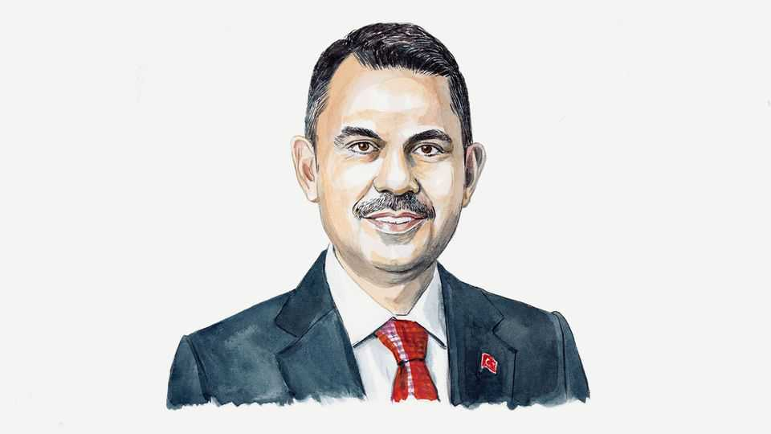

Markets are pushing electrification. Governments must push harder
The transformation can’t be left to market forces alone, writes Murat Kurum, president of COP31

Nov 5th 2026
FOR 30 YEARS global climate talks have focused on what’s feeding power systems. The defining battles of the annual COP UN climate summits have been between wind turbines and chimney stacks; solar panels and pipelines. How we use that power to electrify buildings, transport and industry has been largely ignored, despite these sectors producing almost half of emissions.
Like a northern European city this summer, electrification is now getting its day in the sun. An opportunity has opened up as the economics have shifted. Energy prices are rising sharply, cost-of-living pressures are biting and green-technology costs are plummeting. Preliminary data indicate markets are moving this year as more electric tech is shifting off the shelves.
Campaigners often insist the economic case for green technology is clear. But hopes that market forces alone will solve the energy transition are misplaced. Even with building momentum, existing trends indicate electrification is expanding too slowly—from meeting 23% of the world’s final energy consumption today to 29% by 2035. This is not the 35% that the science says will keep climate goals within reach. State intervention is still needed, urgently.
The Paris agreement of 2015 legally required countries to submit regular climate plans. These plans have been the main mechanism for driving climate policy. However, in the latest round of plans electrification was largely absent.
Too often, electrification targets are merely implicit within headline emission-reduction goals. Think of it like neglecting to produce an AI strategy because you already have a headline growth target. Statements of government commitment, bespoke policy frameworks and incentive structures are all essential to sending important market signals.
Since the start of the conflict in the Gulf, 25 countries have announced new policies to support greater electrification. That is a start, but not enough. Specifically, they must focus on reducing the payback periods of investing in electric tech and guaranteeing the infrastructure to make it work.
Rarely is electric tech cheaper upfront. For consumers, the economic case rests on higher efficiency and lower running costs. Electric vehicles use 70-80% less energy and can save between $200 and $1,500 per year. But too often, it still takes too long to pay back the initial premium.
The relative cost of electricity compared to fossil fuels is critical. The European Commission recently found that once electricity costs more than 2.5 times as much as natural gas, the case for households to switch to heat pumps weakens sharply. Policymakers can intervene by reforming the tapestries of taxes and subsidies on different energy sources. In some developed countries, taxes make up 30% of the cost of residential electricity, and most EU countries tax electricity more than natural gas. Reforms need balancing against fiscal and socioeconomic needs, but the overall imperative to rebalance in favour of electricity remains.
To reduce upfront costs, governments have long deployed a mixture of direct subsidies, preferential tax rates and social-support schemes. Türkiye’s rapid adoption of electric vehicles has been driven by reductions in value-added tax that lower sticker prices at the dealership.
Multilateral development banks and other development-finance institutions can also use grant-based and concessional capital along with loan guarantees to lower the cost of capital. This is particularly important for developing countries, which face far higher borrowing costs that are holding back investment.
But these incentives cost money. In a fiscally constrained world, electrification must fight harder for a share of a shrinking pie. Nevertheless, as the inherent risks of energy import dependency come more sharply into view, governments should be ready to review the case for more aggressive support. This year 95 countries have introduced emergency price caps, subsidies or fuel-levy cuts to support consumers. Public money might be better spent subsidising the equipment needed to reduce exposure to volatile global markets.
Governments must also give consumers confidence that once they have bought their electric appliance, they will be able to run it. Otherwise, they will not risk the investment. However, 730m people lack electricity, and millions more have only unreliable access. Even in rich countries, low investment in grids is a constraint. There is simply no transition without transmission. Around $1trn is needed each year for grids and storage between now and 2030. Permitting times need to be shortened. Outdated policy and regulatory frameworks that are based on old fuel sources rather than renewables need reform.
So how to kick-start progress? As chair of COP31, Türkiye is making electrification the golden thread, or copper wire, connecting all our efforts. We have proposed a global “35-by-35” target—35% electrification by 2035—to focus minds and enable us to track progress. Türkiye is also leading by example and will publish its national energy plan at COP as part of our efforts to reduce spending on energy imports from 2.1% of GDP to 0.7% by 2050.
Everyone will have their own pathway. Broadly speaking, developed countries will favour electric cars, heat pumps, low-level industrial heating and AI-driven grid optimisation. Developing countries will focus more on electric bikes, cooking-stoves and industrial motors, which require expanding basic electricity access. They will also need more support from international donors.
Overall, we cannot leave electrification to market forces alone. They will not fully deliver the potential for energy security, affordability and emission reductions. We need a partnership where governments enable the private sector to throw its full weight behind electrification. Türkiye will use the summit to press everyone to show what more they can do. In the end, success will be measured in cleaner air, lower global temperatures and communities no longer at the mercy of violently convulsing global energy markets. The International Energy Agency shows that the 35-by-35 target could save $500bn each year in avoided fuel imports. Markets have started this journey. Governments need to finish it.■
Murat Kurum is Turkey’s environment minister and president of the COP31 climate-change conference.